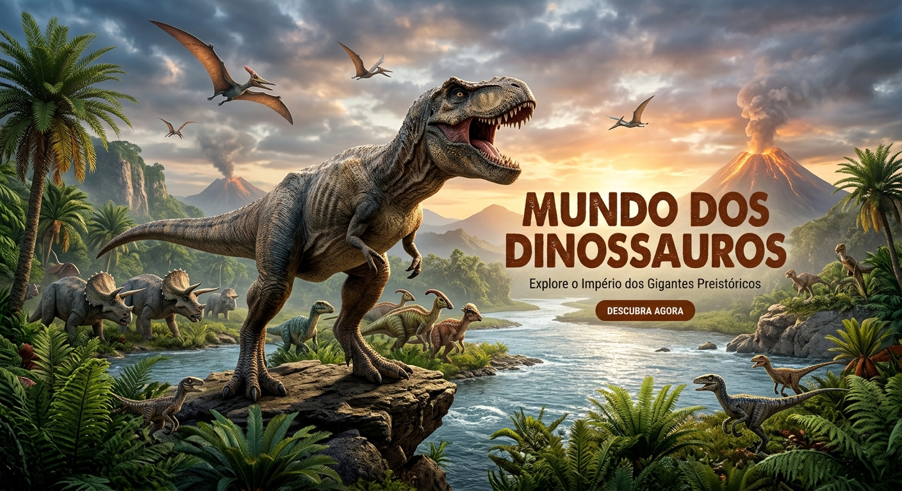

Bem-vindo ao maior covil dos Spinosaurus da web!
O maior de todos os carnívoros.
Por: Rafael

Dominando os antigos ecossistemas.
![Uma ilustração épica e hiper-realista de um Spinosaurus caminhando pelas águas rasas de um rio pré-histórico durante o pôr do sol. O dinossauro possui escamas detalhadas nas cores preto e dourado, garras afiadas e uma impressionante espinha dorsal (vela) destacada pela luz avermelhada do horizonte. Ao fundo, uma floresta tropical densa com samambaias gigantes, vulcões ativos soltando fumaça e pterodáctilos voando sob um céu alaranjado e dramático. No canto inferior direito, o logotipo dourado 'Spinosaurus'.](imagem-blog.jpg)